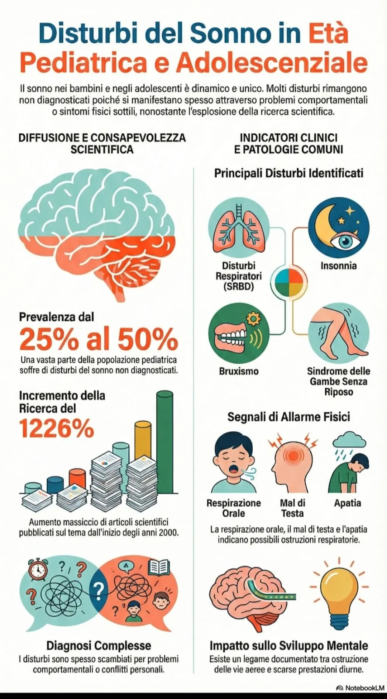

Età pediatrica e adolescenziale
Disturbi del sonno spesso non diagnosticati
Il sonno nei bambini e negli adolescenti è dinamico e unico. Molti disturbi restano non diagnosticati perché si manifestano attraverso problemi comportamentali o sintomi fisici sottili, nonostante l’aumento della ricerca scientifica sul tema.
25–50%
prevalenza stimata di disturbi del sonno non diagnosticati
+1226%
incremento della ricerca scientifica dagli anni 2000
SRBD
insonnia, bruxismo e gambe senza riposo tra i quadri più frequenti
Segnali di allarme tipici: respirazione orale, mal di testa e apatia, spesso legati a possibili ostruzioni delle vie aeree e a prestazioni diurne ridotte.